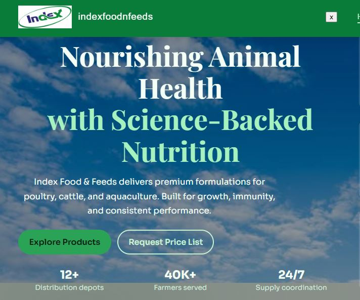

Frontend engineering
React.js, HTML5, CSS3, JavaScript (ES6+), WordPress, and Framer—used to build accessible, responsive user experiences.
Full-stack software engineer · Lahore, Pakistan
I’m Maheen Zahid—a Software Engineering graduate building production-ready web applications and applied AI/ML systems with MERN, .NET, and data-driven thinking.

Open to remote & on-site opportunities
01 / Profile
Software Engineering graduate from UET Lahore (GPA 3.18) with hands-on experience in full-stack web development, mobile applications, and applied machine learning. I build scalable solutions with React, Node.js, .NET/C#, MySQL, and MongoDB.
My project work spans RESTful APIs, data pipelines, LLM integration, predictive modelling, and analytics dashboards. I work well in Agile teams and bring a practical, client-focused approach to delivery.
02 / Technical strengths
React.js, HTML5, CSS3, JavaScript (ES6+), WordPress, and Framer—used to build accessible, responsive user experiences.
Node.js, Express.js, .NET, PHP, REST API design, and integration for dependable application foundations.
MongoDB, MySQL, and Supabase with practical experience in database-backed features and structured data management.
Predictive modelling, preprocessing, Scikit-learn, Pandas, NumPy, Qwen/LLaMA integration, and prompt engineering.
03 / Selected work
From AI research systems to client-ready, full-stack applications.

AI-driven crime intelligence platform that turns raw crime datasets into structured insights. Built the data pipeline, integrated Qwen and LLaMA for natural-language query and report summarisation, and created an analytics dashboard for trend and hotspot detection.


Production company website with a React frontend and a Node.js/Express REST API backend integrated with MongoDB.
Pharmacy management application for medicine inventory and order processing, delivered with a responsive Bootstrap frontend and MySQL-backed workflows.
Database-driven desktop application covering order management, billing, inventory tracking, and user authentication.
Database-driven application for product management, billing, order processing, and inventory tracking.

Complete WordPress CMS portfolio website delivered for an architecture firm as a professional freelance client project.
04 / Experience
Built and maintained responsive React.js interfaces and reusable JavaScript components for core product features. Collaborated with a distributed cross-functional team in Agile/Scrum delivery cycles, integrating RESTful APIs to connect frontend experiences with backend functionality.
Developed user-facing web application features for a government digital services initiative using HTML, CSS, and JavaScript. Worked under senior developer guidance, participating in code reviews and collaborative Git-based version-control workflows.
05 / Education & learning
University of Engineering and Technology (UET), Lahore · Dec 2022 – Present
GPA: 3.18 / 4.0
06 / Toolkit
07 / Contact
Open to full-stack development and AI/ML engineering opportunities—remote or on-site.